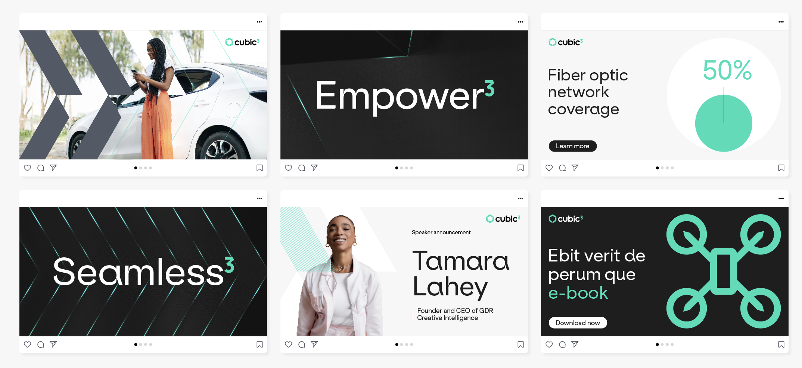
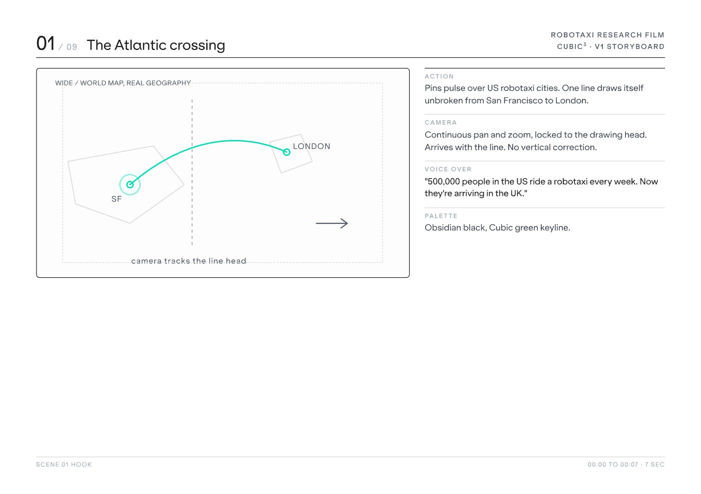
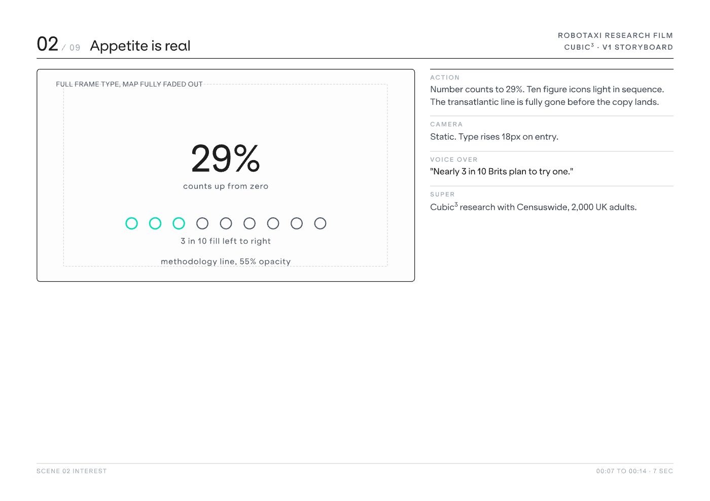
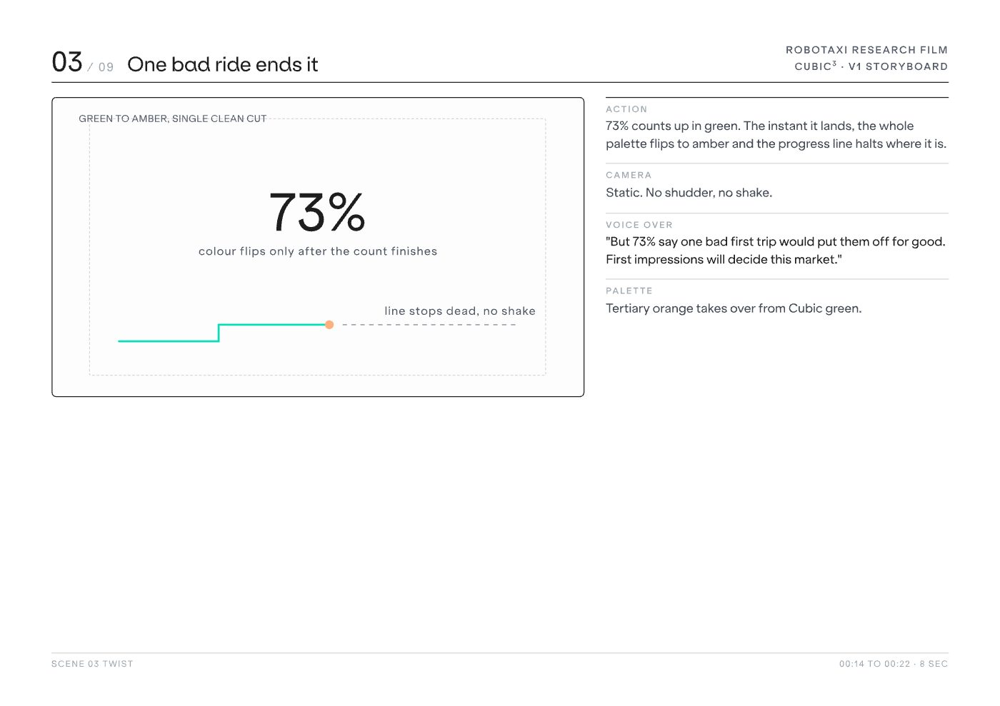
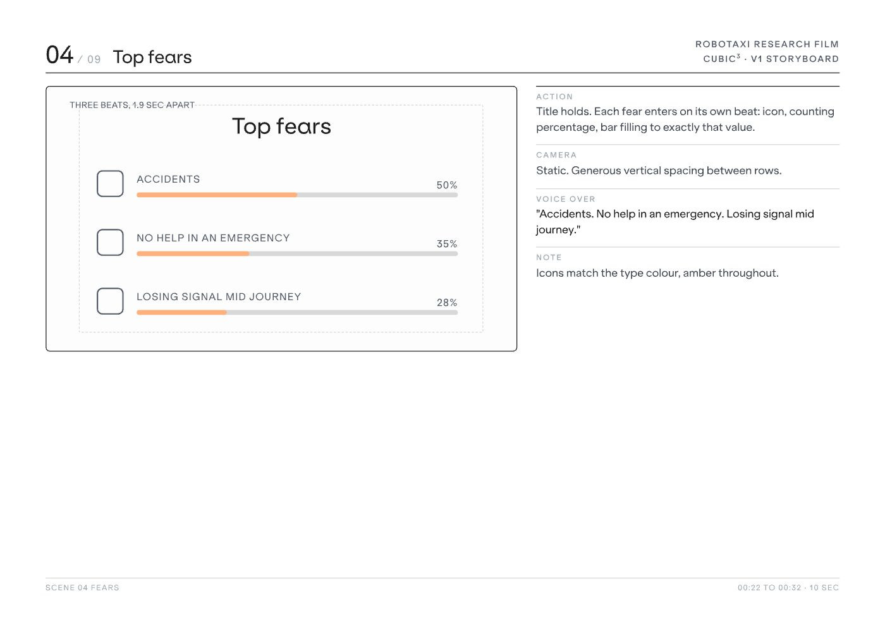
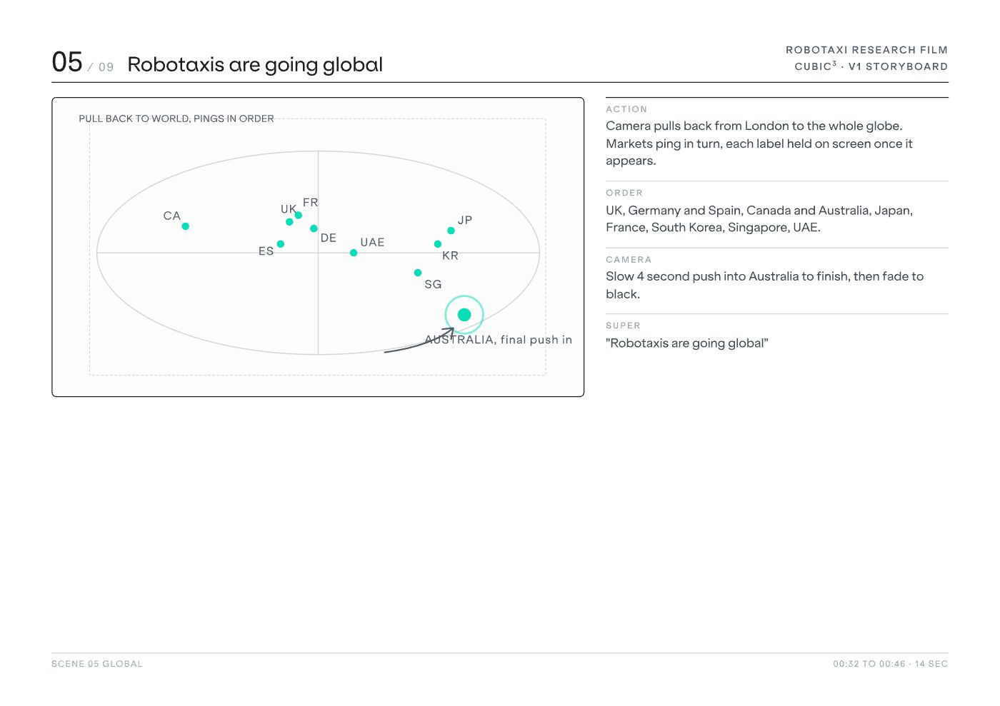
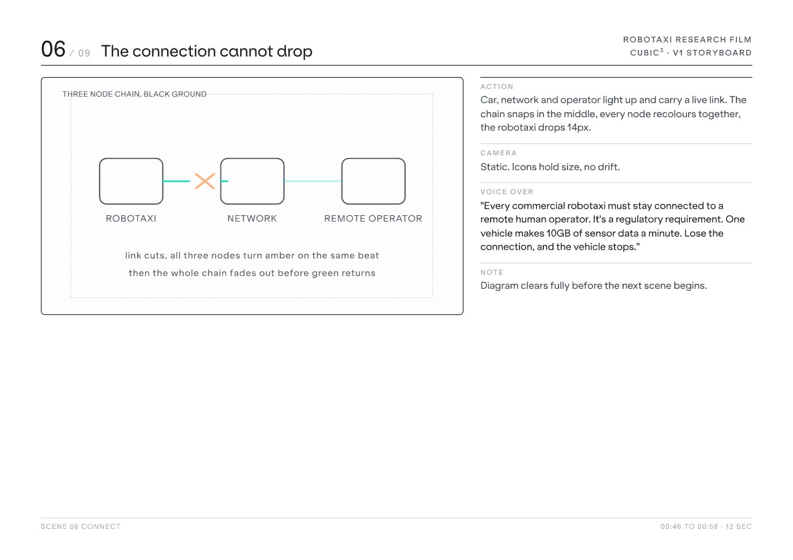
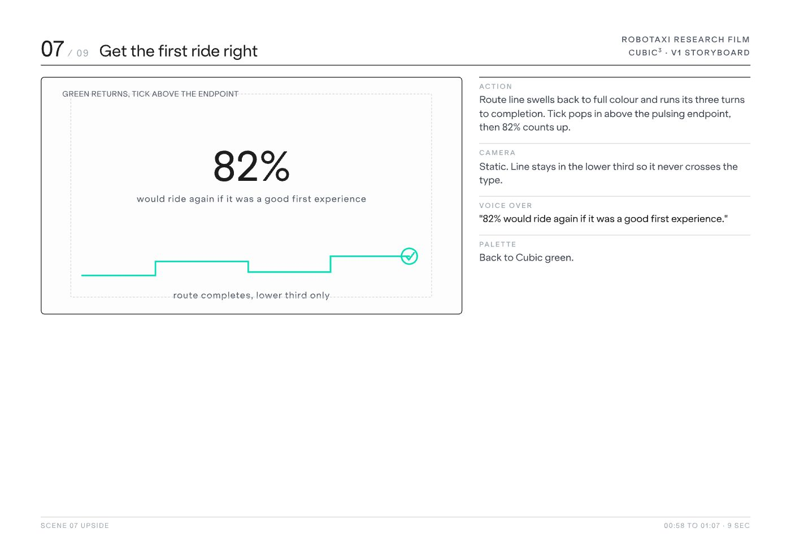
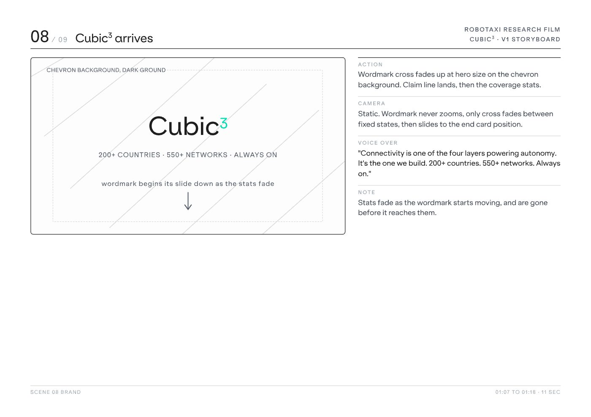
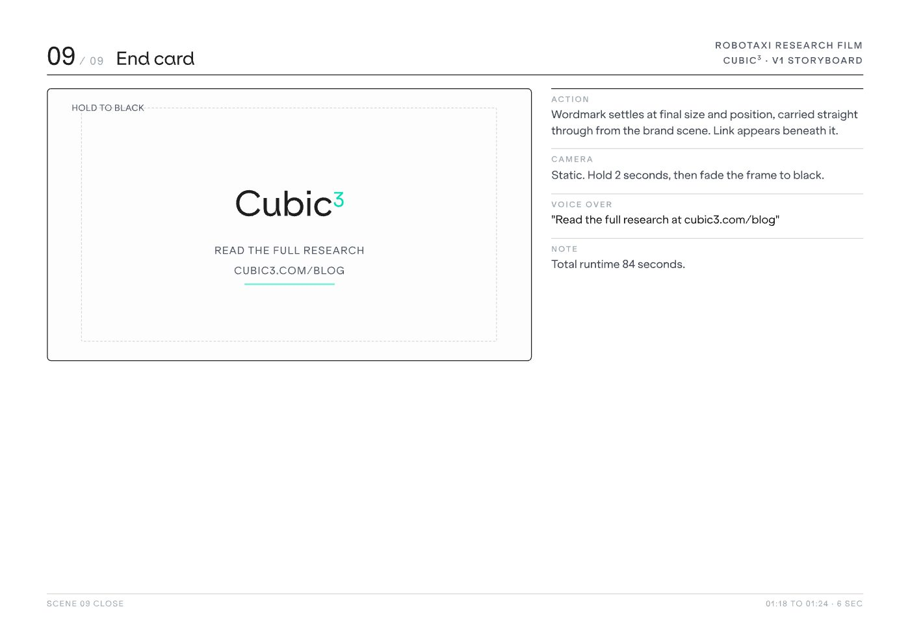

Animated narrative work for campaign and product storytelling. The rule I work to: motion earns its place only when it shows something a still cannot. Most of these exist to make an invisible technology visible.
Video that supports launches and campaigns with clarity and energy, built to hold attention on fast-scrolling platforms.
Cubic³ was repositioning from a connectivity provider to a global connected mobility technology company, but had no visual system built for that story. The brand needed to make complex technology feel accessible and premium, consistently, across a fast-moving global marketing org.
I led two designers and a contractor through application and rollout, setting the standards, running the reviews, and dividing the work so the system was being built and used at the same time. I led the visual development of the new design language across digital, product, campaign and marketing applications, atmospheric imagery, 3D forms, colour, lighting and graphic elements combined into a system that flexes across products and communications. Then I codified it: master templates with embedded brand fonts, a defined type/colour/layout system, and a set of AI tools that generate and rebrand material directly against the brand rules, including a review agent that checks output before it reaches a stakeholder.
Deck and document turnaround down 50%. Full marketing team onboarded to the toolset within three months, with the design team working to a single standard rather than three interpretations of it. Sales, product and marketing now produce their own collateral, on brand, without design input. Efficiency saving modelled at €250k annually at under 15% company-wide adoption.

Campaign design across paid and owned channels. Built as a system rather than a set of posts, so one idea holds together across formats and placements while staying recognisable at thumbnail size in a hostile feed.
Brand guidelines were being loosely applied, if at all. Every on-brand presentation, document, proposal or data visualisation needed a designer. A hard bottleneck for any design function serving a global marketing organisation.The team was spending its time reproducing the same formats instead of doing design work.
I own the whole thing: the design decisions, the build, the versioning, and a quality layer that reviews output before it ships. My team maintains and extends it, and I set the standards it enforces.
The design team moved off template production and onto brand and campaign work. The design function now serves a global marketing organisation at scale, generating on-brand presentations, documents, proposals and data visualisations without becoming the bottleneck.
Visual output across teams was inconsistent; different tools, different hands, no shared design language tying it together, so quality and tone varied depending on who touched it last.
I defined a graphic design language spanning type, colour, layout and imagery, and applied it consistently across formats and channels, so anything the brand produces reads as one voice rather than a patchwork of one-offs.
A consistent visual language that scales across channels, faster design decisions, and a brand that's recognisable everywhere it shows up.
Physical product and packaging design, taken from concept and layout through print-ready production artwork. Includes a can and label range for an Irish drinks brand, where the constraint is a curved surface, a shelf full of competitors and about a second of attention.
I got sick of wearing other people's brands.
I made my own, Perch.
A clothing brand that signifies a laid-back style of living with warm pastel colours, a beach vibe and chilling by the sunset.

Stand and environmental graphics for various global events, built from the same design language as the brand rather than a one-off event look. Large format changes the rules: type that reads at forty feet, hierarchy that survives people walking past at an angle, and a single idea legible in the three seconds someone gives a stand from the aisle.
Direct campaign visuals across paid and owned channels.
eBooks, annual reports and long form publications need to carry the brand and deliver the message.
Custom icon families for digital products and interfaces.
Presentation design for C-level and customer audiences, including board packs, executive briefings and customer facing pitch material, produced under short turnarounds. Codified into a master template system and an AI deck builder that other teams now use directly. Deck turnaround down 50%, with sales and product producing their own on brand decks without design input.
Interface work for digital products, designed to survive handoff.
Connectivity is invisible. A film about infrastructure defaults very easily to stock footage and abstract promises that any competitor could make word for word, and says nothing about what the company actually does or why it matters.
I storyboarded and directed the film, set its visual language, built motion graphics for the parts that had to show something you cannot photograph, and supported the edit through to delivery.
A finished brand film that gives an invisible product something to look at, carrying the idea of ubiquitous connectivity through story, motion and pacing rather than a list of capabilities.
Cubic³ had commissioned original research into UK attitudes to robotaxis, and the findings deserved more than a slide in a deck. Data films drift easily: motion gets added for its own sake, and by the end the audience remembers the animation instead of the argument.
I boarded the whole film before a frame was animated, nine scenes specified for action, camera, voice over, on screen supers and palette, timed to the second against an 84 second runtime. The art direction carries the argument rather than decorating it: Cubic green for the upside, tertiary amber the moment the story turns to risk, and a locked off camera almost throughout, so the numbers move and nothing else does.
A finished research film that runs to exactly the 84 seconds it was boarded for, holding one clear line end to end: the appetite is real, a single bad first ride would kill it, and connectivity is what stands between the two.










I'm a Dublin based art director and brand lead with over eight years across brand, film, motion, digital and design systems.
I lead the design function for a global connected mobility technology company, and I direct as well as make: setting the visual language, boarding and directing film, and briefing designers, animators and outside partners to a standard I hold myself. Two company wide rebrands delivered, one directing an external agency end to end, plus the AI powered design system the business now uses to produce its own on brand material at scale.
What I care about is the idea surviving the process. Storyboards, stakeholders, feedback rounds and final production, without losing what made it worth doing.

Hi, I'm Niall! I am from Sligo and I love being outdoors. I really enjoy making art, I love to walk my dog, surf, hike, run, act and play music (really badly).
I love to cook and I am learning to speak Italian! I'm getting pretty good at one of these things.
I'm a Dublin based art director and brand lead. Eight years in-house across four brand environments, from a two-person marketing team to a global technology company, working in brand, campaign, film, motion, packaging, editorial, event and product. Dublin based, open to hybrid and remote.
Email MeIterative drafts went here, but I'm one of those people who empties the bin regularly. Every project on the desktop got here by leaving something in the bin.